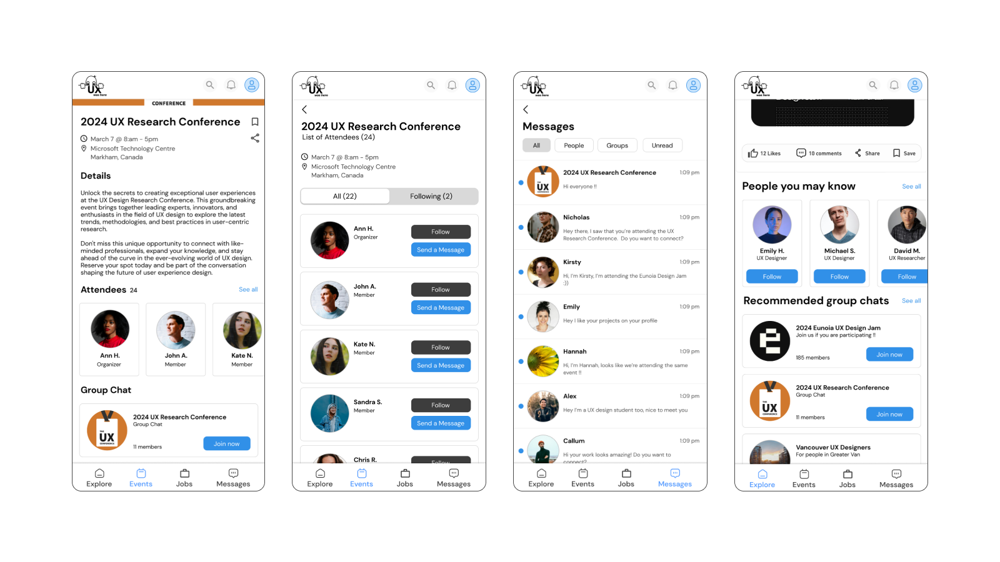
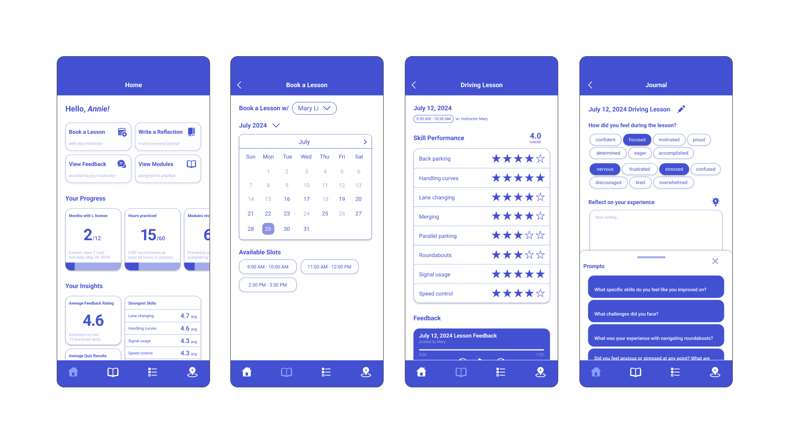
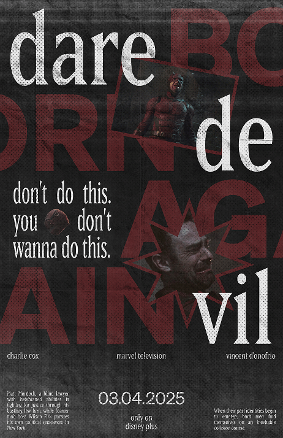
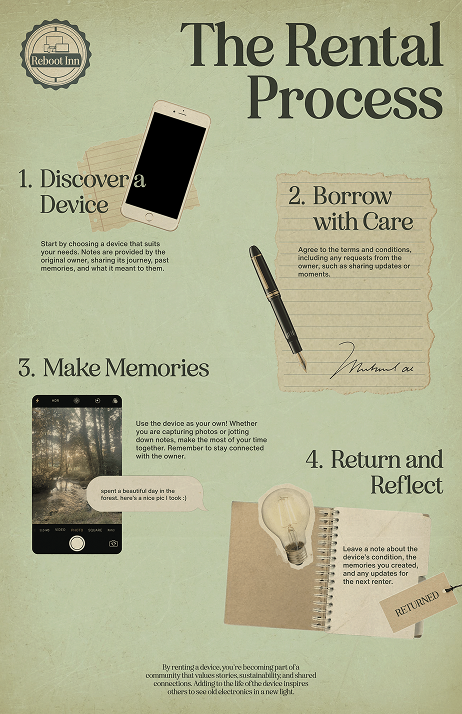
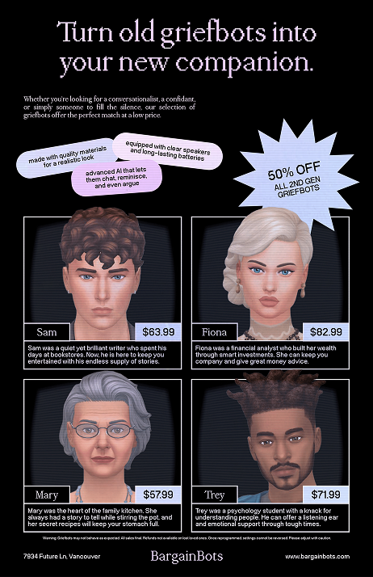
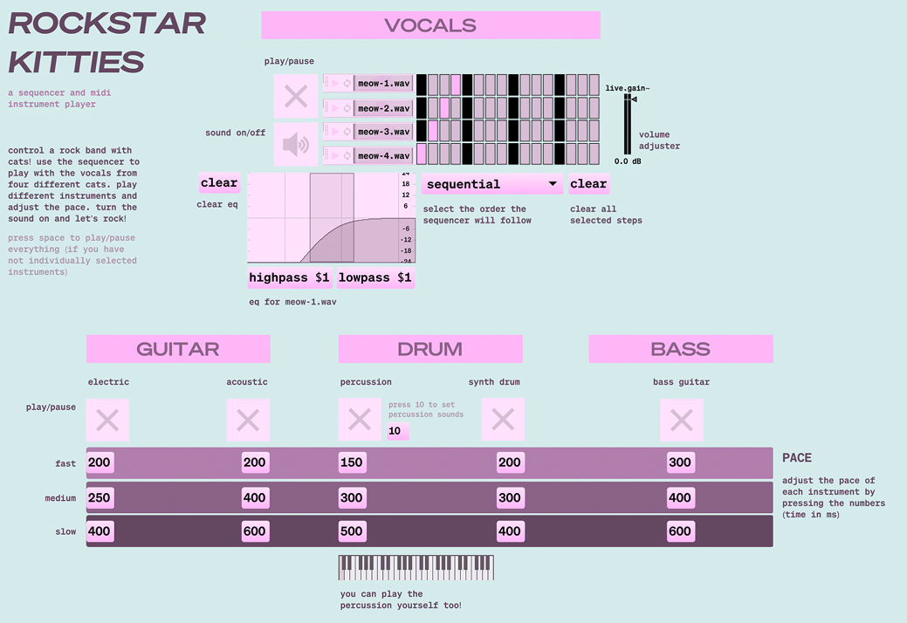
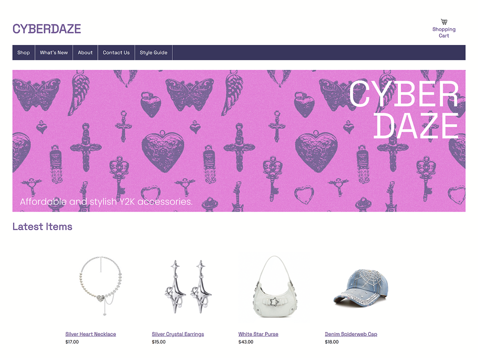
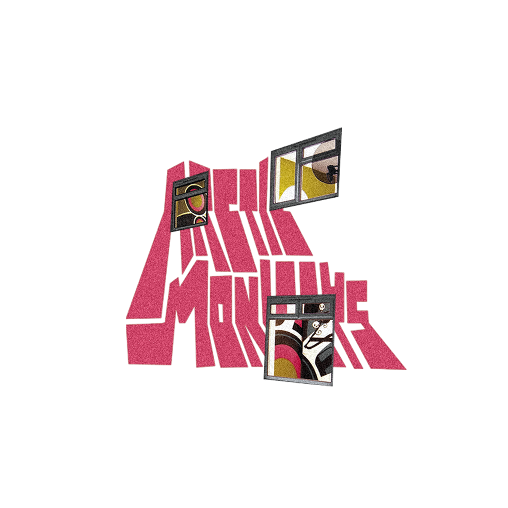

Hi, I'm Irene, a UX designer and student at SFU's School of Interactive Arts and Technology. I am dedicated to creating inclusive and accessible designs by prioritizing simplicity and minimalism with a strong art direction. Being curious about how people interact with technology, objects, and experiences in their daily lives drives me to create thoroughly researched user-centred solutions that account for diverse needs.
About Me
Education
Bachelor of Arts, Interactive Arts and Technology (Sep 2021 - present)
Design Concentration, Simon Fraser University
Relevant coursework: Interface Design, Graphic Design, Web Design and Development, Design Evaluation
Skills
UX Research, Wireframing, Prototyping, Usability Testing, Web Design
Figma, Illustrator, Photoshop, After Effects, HTML/CSS
Projects

UX Was Here App Design
Designed a mobile prototype for UX Was Here to encourage introverts to attend events and expand their networks.

Get Driving App Design
Designed a mobile app to streamline the process of learning to drive and obtaining a license in B.C. for immigrant and non-local student drivers.
Gallery





